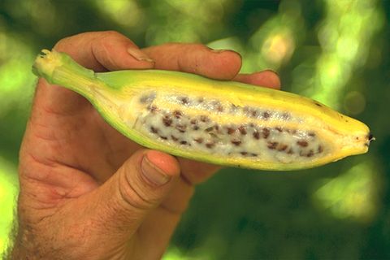

İnsanlığın Doğayı Binlerce Yıllık Şekillendirme Süreci: Yapay Seçilim
İnsanların her gün faydalandığı; doğal olarak yetiştirilsin, yetiştirilmesin her türlü bitki ve hayvanın nasıl bu kadar insanlara uygun amaçlara hizmet ettiği cevabı bilinen iyi bir sorudur. Karpuz, muz, elma gibi meyveler insan damak tadına uygun gıdalarken kedi ve köpek gibi hayvanlar da insanlarla iç içe yaşayabilen ve gayet iyi anlaşan canlılardır. Elbette bütün bu canlılar en başından beri bu şekilde var olmadılar. Tüm bunlar insanlığın yüzlerce veya binlerce yıllık, yapay seçilim adlı doğayı kendine uygun şekillendirme sürecinin bir sonucu.
Bu kavramı daha iyi anlayabilmek için aynı meyve ve hayvanların yaban türlerine bakmak yeterlidir. Doğada insanlıktan uzak şekilde yaşayan bu canlıların en primitif halleri insanların çevresindekilere nazaran bayağı bir farklılık içerir. Yaban meyveleri insan vücudu için zehirli, kontrolsüz üreyebilen şekillerde iken hayvanlara bakıldığında ise insanlara karşı saldırgan veya kolay evcilleştirilemeyen örneklerle karşılaşılır.
Yabani böğürtlen kontrolsüz bir biçimde hızla ürer ve diğer bitkilere zarar verecek bir şekilde asalak bir şekilde yaşam sürebilir. Yabani badem çekirdeği ise insan vücudu için zehir teşkil eder. Bugünün karpuzunun atası fazlasıyla ufak boyutta, su oranı çok az ve kolay parçalanamayan bir yapıya sahiptir. Haşhaş yabani iken patlar ve tohumlarını etrafa saçarak üremeye devam eder. Bu tohumları toplamak isteyen insan için istenmeyen bir durumdur ve bugünün haşhaşında böyle bir özellik yoktur. Muzun atası da aynı şekilde bugünkü halinden oldukça farklı bir şekilde çekirdek dolu ve kuru bir yapıya sahiptir. Köpekler kurtlardan evrimleşmiştir ve ev kedileri ise yaban kedisi (Felis silvestris) isimli bir başka kedi türünün insan hayatındaki bugünkü temsilcisidir.
Yapay seçilim denen süreç doğal seçilim gibi canlının üremesi sonucu oluşan farklı özelliklere sahip yeni canlılardan belli özelliklere sahip olanlarının neslini devam ettirebilirken geri kalanların ettirememesi şeklinde işler. Doğal seçilimde doğa iş başındadır. Doğada hayatta kalamayan yavrular ölürken hayatta kalabilecek yeteneğe sahip canlılar ise neslini devam ettirebilir. Tüm canlılar için bu süreç geçerlidir ve evrim teorisinin temelini oluşturur. Yapay seçilimde ise bu seçme işini insan yapar. Kendine en uygun özellikleri taşıyan genlere sahip canlıların tekrar üremesini sağlar ve bu şekilde her nesilde daha uygun sonuçlar alarak devam eder. Bu süreç sonuçtan memnun kalınıncaya kadar yerine göre yüzlerce veya binlerce yıl sürmeye devam eder ve insan için nesilden nesile aktarılır. Bitkiler söz konusu olduğunda besin değerinin en yüksek olması, daha sulu olması ve üremesinin kontrollü olması gibi özelliklere göre uygun döller seçilerek bunlar yetiştirilir. Hayvanlarda ise gıda olarak tüketilmesi, gücünden faydalanılması veya sadık olabilmesi gibi özelliklere göre uygun döller seçilerek nesli devam ettirilir.
Yapay seçilim evrimin gözlemlenebilir bir kanıtı ve işlemeye devam ediyor. Bu süreç en basit tanımıyla insanlığın evrimi kendine göre hızlandırmasından ibaret. Elbette burada her şey doğanın standart işleyişine göre yapılıyor. Bir diğer şekillendirme türü olan GDO ise bu mevzudan tamamen farklı olarak hemen bir sonraki nesile farklı özellikler kazandırılması şeklinde. GDO direkt olarak canlı üzerindeki genin değiştirilmesi şeklinde gerçekleştirilir. Bir canlıdan alınan istenen özelliğe sahip genin bakteriler aracılığı ile çoğaltılıp bir başka canlıya entegre edilmesi şeklinde gerçekleştirilen bu yöntemle ilgili ileride Sabahlatan.com’da bir başka yazı yazılabilir. Ben üşengeç adamım.